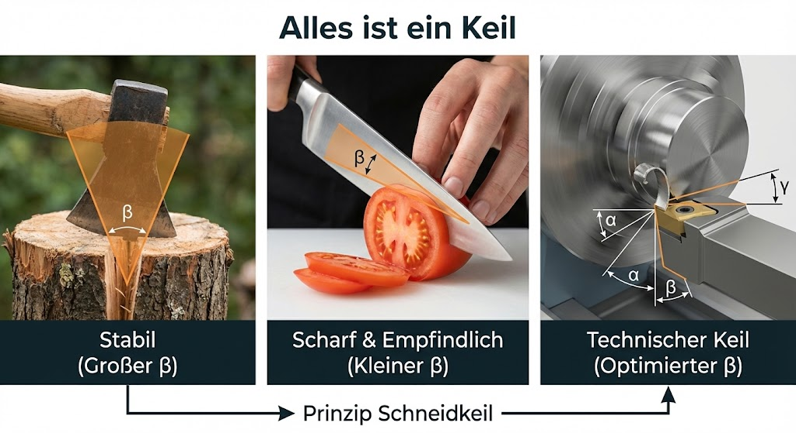
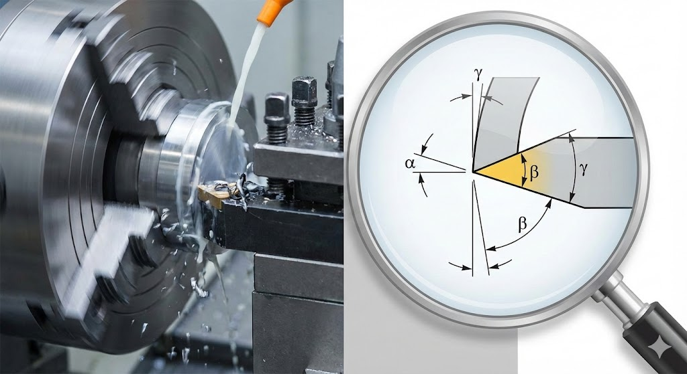
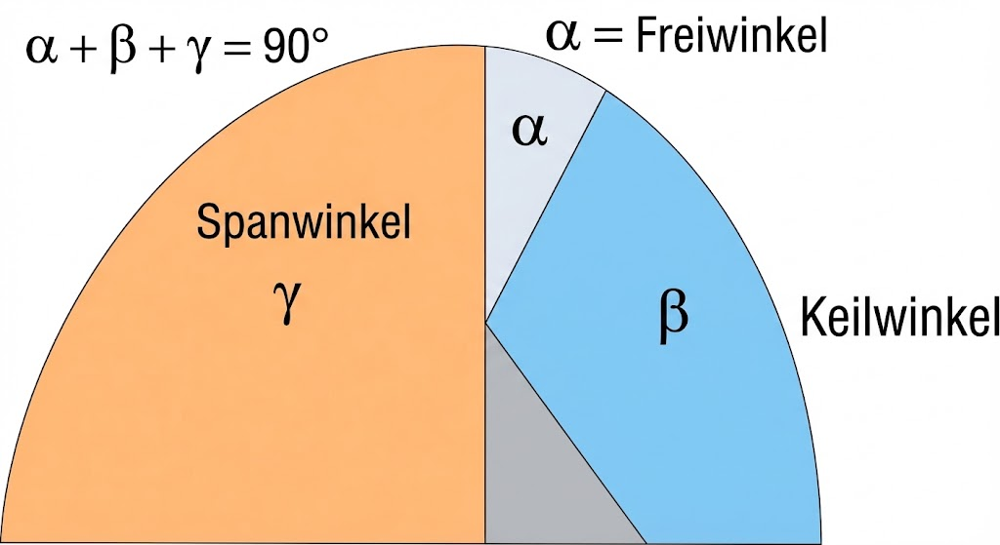
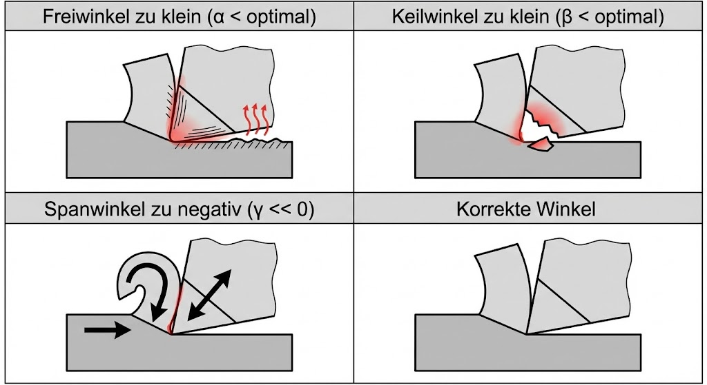
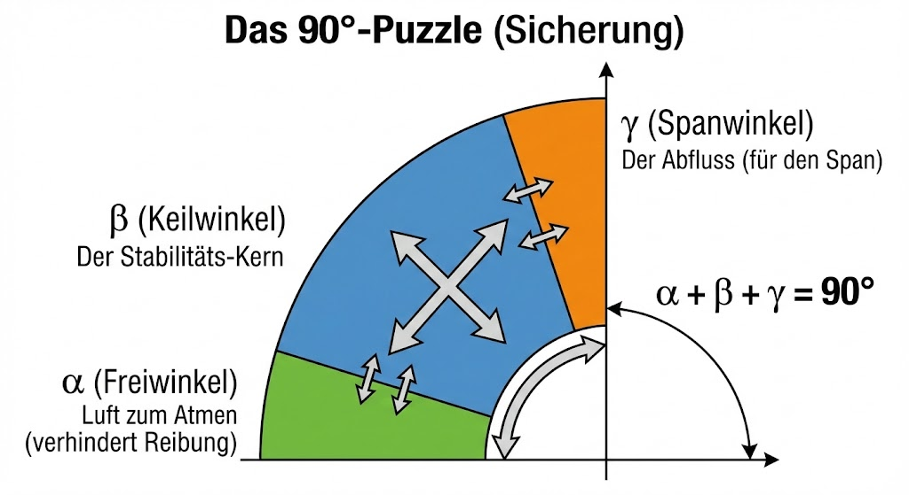

Skript-Bezug
TODO: Lege passende Skizzen/Bilder in LFB_mvp_hko/skript1/ ab und verlinke sie
hier (Pfad aus diesem Modul: ../skript1/...).

Spanwinkel γ: 34° (γ = 90° − α − β)

Theorie / Begriffe
Flächen an der Werkzeugschneide
- Spanfläche: Fläche, auf der der Span abgleitet.
- Freifläche: Fläche, die der Werkstückoberfläche zugewandt ist.
- Schneide: Linie, wo Span- und Freifläche zusammentreffen.
Winkel (schematisch)
- Freiwinkel (α): verhindert Reiben an der Oberfläche.
- Keilwinkel (β): bestimmt „Stabilität“ des Werkzeugkeils.
- Spanwinkel (γ): beeinflusst Spanbildung und Schnittkräfte.
Merksatz (orthogonaler Schnitt):
In dieser MVP-Übung nutzen wir die Beziehung als Rechenhilfe (didaktisch vereinfacht).
Interaktiv: Zuordnung Winkel & Flächen
Wähle pro Zeile den passenden Begriff und klicke Prüfen. „Alles prüfen“ zählt die korrekten Zuordnungen.
1) Winkel
| Definition | Begriff | Prüfen | Feedback |
|---|
—
2) Flächen
| Definition | Begriff | Prüfen | Feedback |
|---|
—
Self-Check
Resultat eingeben → „Prüfen“. Bei Bedarf „Lösung anzeigen“ öffnen.

